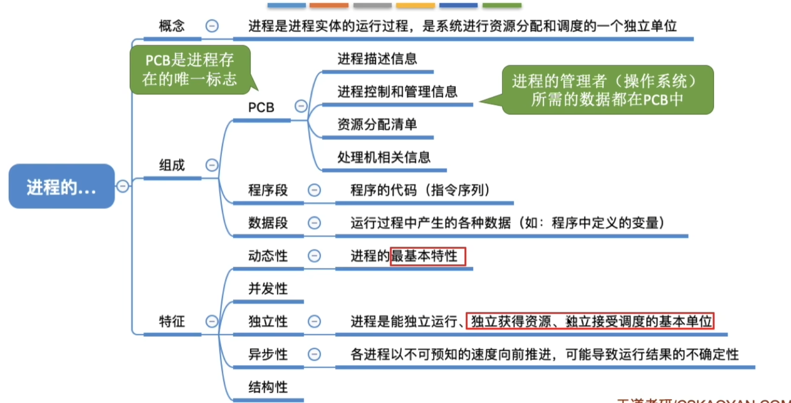
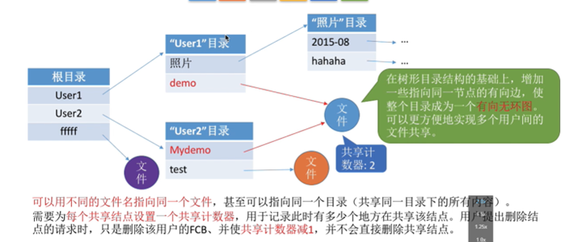
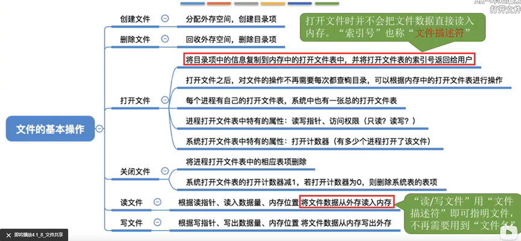
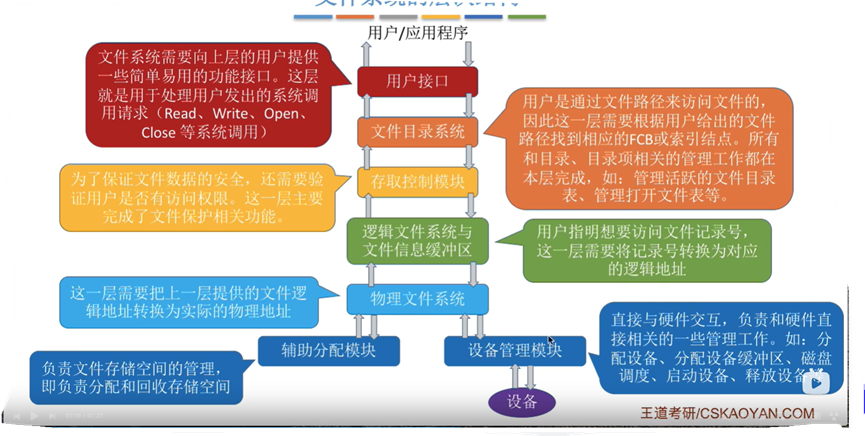
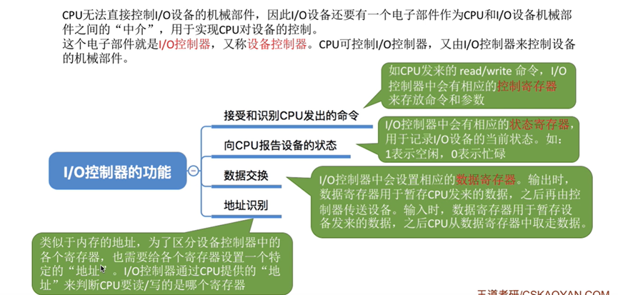
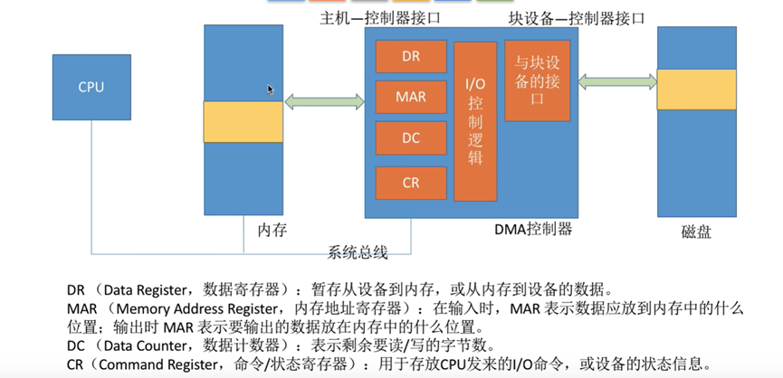

1.1_1 操作系统的概念、功能和目标
作为用户和计算机硬件之间的接口
• 提供的功能
• 命令接口（联机命令接口|脱机命令接口）
• 程序接口
• GUI（图形用户界面win|ios|andrio）
• 目标
• 方便用户使用
![图片1.1——1]
1.1_2 操作系统的特征
并发|并行
并发：多个事件交替发生（宏观同时发生、微观交替进行）
并行：多个事件同时发生
共享
两种资源共享方式
• 互斥共享方式：一个时间段内只允许一个进程访问该资源
• 同时共享方式：允许一个时间段内由多个进程“同时”对它们进行访问
虚拟
概念：把一个物理上的实体变为若干个逻辑上的对应物
• 空分复用计数
• 时分复用计数
异步
概念：在多道程序环境下，允许多个程序并发执行，但由于资源有限，进程的执行不是一贯到底的，而是走走停停的，以不可预知的速度向前推进。只有系统拥有并发性，才有可能导致异步性。
![图片1.1——2]
1.1_3 操作系统的发展与分类
OS的发展与分类
• 手工操作阶段
• 纸带机（用户独占全机、人机速度矛盾）
• 批处理阶段——dan'dao
• 单道批处理系统（外围机——磁带）
• 多道批处理系统（操作系统开始出现）
• 分时操作系统
• 轮流处理作业
• 不能处理紧急任务
• 实时操作系统
• 优先处理紧急任务
• 硬实时系统：必须在严格的时间内完成处理
• 软实时系统：可以偶尔犯错
• 网络操作系统
• 分布式操作系统
• 个人计算机操作系统
![图片1.1-3]
1.1_4 操作系统的运行机制与体系结构
OS的运行机制和体系结构
• 运行机制
• 两种指令
• 特权指令
• 非特权指令
• 两种处理器状态
• 核心态（root）
• 用户态
• 两种程序
• 内核程序(运行在核心态 )
• 应用程序
• 操作系统内核
• 时钟管理（实现计时功能）
• 中断处理
• 原语（程序运行具有原子性，不可中断）
• 对系统资源进行管理的功能
• 进程管理
• 存储器管理
• 设备管理
• 操作系统的体系结构
• 大内核（将操作系统的主要功能模块都作为系统内核，运行在核心态）
• 微内核（只把最基本的功能保留在内核）
![图片1.1-4]
1.1_5 中断和异常
• 中断机制的诞生
• 操作系统介入，开展管理工作
• “用户态—>核心态”是通过中断实现的。并且中断是唯一途径
• 中断的概念和作用
• 中断的分类
• 内中断（异常）
• 陷阱（trap）
• 故障（fault）
• 中止（abort）
• 外中断 （CPU外部）
• 外中断的处理过程
1.1_6 系统调用
概念：应用程序通过系统调用请求操作系统的服务。保证系统的稳定性和安全性。
系统调用和库函数的区别：
• 系统调用是操作系统向上层提供的接口
• 有的库函数是对系统调用的进一步封装
• 当今编写的应用程序大多是通过高级语言提供的库函数间接地进行系统调用
1.1_7 操作系统体系结构
1.1_8 操作系统引导
1.1_9 虚拟机
2.1_1 进程的定义、组成、组织方式、特征
定义：进程是进程实体的运行过程，是系统进行资源分配的一个基本独立单位
组成：PCB（进程存在唯一的标志），程序段，数据段
进程实体是进程的运行过程，是系统进行资源分配的一个独立单位
组织方式：链接方式，指针指向不同的队列；索引方式，索引表
特征：动态性、并发性、独立性、异步性、结构性

2.1_2 进程的状态与转换
状态：运行状态，就绪状态，阻塞状态，创建状态，终止状态
- 运行状态：占有CPU，并在CPU上运行，单核只能一个进程（双核两个）（CPU√，其它资源√）
- 就绪状态：已经具备运行条件，但是没有空闲的CPU，暂时不能运行（CPUX，其它资源√）
- 阻塞状态：等在某个事件的发生，暂时不能运行（CPUX，其它资源X）
- 创建状态：创建PCB，程序段，数据段
- 终止状态：回收内存，程序段，数据段，撤销PCB
进程状态间的转换(图，且只能这样转化)
进程pcb中，会有一个变量state来表示进程的当前状态。
进程的组织—链接方式、索引方式
2.1_3 进程控制
- 基本概念：进程控制的主要功能是对系统中的所有进程实施有效的管理，它具有创建新进程、撤销已有进程、实现进程状态转换等功能。
-
什么是进程控制？
答：实现各种进程状态转换。 -
如何实现进程控制？
答：用“原语”实现。 - 原语做的事情：
- 更新PCD中的信息
- 将PCD插入合适的队列
-
分配/回收资源

-
进程控制相关的原语：
- 进程的创建：
创建原语：申请空白PCB、为新进程分配所需资源、初始化PCB、将PCB插入就绪队列
引起进程创建的事件：用户登录、作业调度、提供服务、应用请求 - 进程的终止：
撤销原语：找到终止pcb，剥夺CPU并重新分配，终止子进程，归还资源，删除pcb 就绪态/阻塞态/运行态 ——》 终止态 ——》 无
引起进程中止的事件：正常结束、异常结束、外界干预 - 进程的阻塞：
阻塞原语：运行态->阻塞态
引起进程阻塞的事件：需要等待系统分配某种资源、需要等待相互合作的其他进程完成工作 - 进程的唤醒：
唤醒原语：阻塞态->就绪态
引起进程唤醒的事件：等待的事件发生 - 进程的切换
切换原语：将运行环境信息（context进程上下文）存入pcb，pcb移入相应队列，选择另一个进程执行并更新其pcb，根据pcb恢复新进程所需的运行环境。 运行态 ——》阻塞态/就绪态 就绪态——》运行态
引起进程切换的事件：当前进程时间片到、有更高优先级的进程到达、当前进程主动阻塞、当前进程终止
2.1_4 进程通信
-
进程是分配系统资源的单位，因此各进程拥有的内存地址空间相互独立
-
共享存储 （分配共享空间，且互斥（P、V操作））
基于数据结构的共享：固定分配（低级）
基于存储区的共享：划分存储区（高级） -
消息传递
通过发送原语，接收原语实现
消息：消息头（发送进程ID，接受进程ID）、消息体
直接通信方式（直接挂载消息）
间接通信方式（间接利用信箱发送消息） -
管道通信（pipe）
只能半双工通信（只能单向传输），先进先出（循环队列）
互斥（管空没写不能读，反之同理）
2.1_5 线程概念和多线程模型
-
什么是线程，为什么要引入线程？
答：线程是一个基本的CPU执行单元，也是程序执行流的最小单位，进一步提高了系统的并发度 -
引入线程机制后，有什么变化？
- 资源分配、调度：进程是资源分配的基本单位，线程是调度的基本单位
- 并发性：各线程间也能并发，提升了并发度
-
系统开销：可以只在进程中切换，减小了CPU切换环境的系统开销
-
线程有哪些重要的属性
- 线程是处理机调度的基本单位
- 多CPU计算机中，各个线程可占用不同的CPU
- 每个线程都有一个线程ID、线程控制块（TCB）
- 线程也有就绪、阻塞、运行三种基本状态
- 线程几乎不拥有系统资源
- 同一进程的不同线程间共享进程的资源
- 由于共享内存地址空间，统一进程中的线程间通信甚至无需系统干预
- 同一进程中的线程切换，不会引起进程切换
- 不同进程中的线程切换，会引起进程切换
- 切换同进程内的线程，系统开销很小
-
切换进程，系统开销较大
-
线程的实现方式
- 用户级线程（ULT）：由应用管理，从用户的视角看能看到的线程
- 内核级线程（KLT）：由操作系统管理，从操作系统内核视角看能看到的线程
- n个ULT可以映射到m个KLT上（n>=m）
内核级线程才是处理机分配的单位
- 多线程模型
-
多对一模型
n个ULT映射到1个KLT
优点：开销小，效率高
缺点：容易阻塞，并发度不高 -
一对一模型
n个ULT映射到n个KLT
优点：并发能力很强
缺点：占用成本高，开销大 -
多对多模型 n个ULT映射到m个KLT上（n>=m）
中和以上两种优缺点
2.1_6 线程的状态与转换
线程的组织与控制
2.2_1 处理机调度的概念、层次
-
基本概念：通常进程数量大于处理机数量，所以要按照一定的算法选择一个进程，并将处理机分配给它运行，以实现进程的并发执行
-
三个层次：
- 高级调度（作业调度）：辅助外存与内存之间的调度，作业调入时会建立相应的PCB，作业调出时才撤销PCB，调入可由操作系统决定，调出由作业运行结束才调出
- 中级调度（内存调度）：将暂时不用的进程放到外存（PCB不外放），提高内存利用率和系统吞吐量，进程状态为挂起状态，形成挂起队列
- 低级调度（进程调度）：最基本，用算法为进程分配处理机资源，几十ms一次
三层调度的联系、对比
进程的“挂起态”
七状态模型
2.2_2 进程调度的时机、切换与过程调度方式
- 时机
- 什么时候需要进程调度？
- 主动放弃（进程正常终止、运行过程中发生异常而终止、进程主动请求阻塞）
- 被动放弃（分给进程的时间片用完、有更紧急的事需要处理、有更高优先级的进程进入就绪队列）
-
什么时候不能进行进程调度？
- 在处理中断的过程中
- 在操作系统内核程序临界区中 (在普通程序临界区时可以进行调度)
- 临界资源：一个时段段内各进程互斥地访问临界资源
- 临界区：访问临界资源的那段代码
- 内核程序临界区会访问就绪队列，导致其上锁
- 在原子操作过程中（原语）
-
切换与过程
- “狭义的调度”与“进程切换”的区别
- 狭义：选择一个进程
- 广义：狭义+进程切换
-
进程切换的过程需要做什么？
- 对原来运行进程各种数据的保存
- 对新的进程各种数据的恢复
-
方式
- 非剥夺调度方式（非抢占式）:只允许进程主动放弃处理机
- 剥夺调度方式（抢占式）:进程被动放弃，可以优先处理紧急任务，适合分时操作系统、实时操作系统
2.2_3调度程序与闲逛进程
- 就绪态 ——》运行态，运行态 ——》就绪态 , 由调度程序引起
-
调度程序决定：
- 让谁运行 —— 调度算法
- 运行多长时间 —— 时间片大小
-
闲逛进程（idle）：没有其他就绪进程时，运行闲逛进程。
-
闲逛进程特性：
- 优先级最低
- 可以是0地址指令
- 能耗低
2.2_4 调度算法的评价指标
-
CPU利用率
CPU利用率 = CPU忙碌的时间 / 总时间 -
系统吞吐量
系统吞吐量 = 总共完成了多少道作业 / 总共画了多少时间 -
周转时间
- 周转时间（提交作业到完成作业花费的时间）
- 平均周转时间（各作业周转时间之和/作业数）
- 带权周转时间（作业周转时间/作业实际运行的时间）
- 平均带权周转时间（各作业带权周转时间/作业数）
-
等待时间
进程或作业等待处理机状态时间的和- 进程：等待被服务的时间之和
- 作业：建立后的等待时间+作业在外存后备队列中等待的时间
-
响应时间
从用户提交请求到首次产生响应所用的时间
2.2_5 FCFS、SJF、HRRN调度算法
先来先服务（FCFS）
先到达先进行服务
作业-后备队列；进程-就绪队列
非抢占式
公平、算法简单
对长作业有利、对短作业不利、不会饥饿
短作业优先（SJF，shortest job first）
最短（服务时间最短）的作业优先得到服务，时间相同，先到达的先被服务
- 非抢占式（SJF）：选最短需要时间的作业先进入运行态
- 抢占式（SRTN）：有新作业进入就绪队列或有作业完成了，就绪队列中的最小需要时间的作业
在所有进程都几乎同时到达时，采用SJF调度算法的平均等待时间、平均周转时间最少
若无所有进程都几乎同时到达时的前提时，抢占式的短作业/进程的平均等待时间、平均周转时间最少
优点：“最短的”平均等待时间，平均周转时间
缺点：对短作业有利，对长作业不利，可能产生饥饿现象
高响应比优先（HRRN）
要综合考虑作业/进程的等待时间和要求服务的时间
在每次调度时先计算各个作业/进程的响应比，选择响应比最高的作业/进程为其服务
响应比 =（等待时间+要求服务时间） / 要求服务时间
非抢占式
进程主动放弃CPU时，需要该算法选取就绪队列的作业
优点：
FCFS优点
SJF优点
不会饥饿
2.2_6 时间片轮转、优先级调度、多级反馈队列（适合交互式系统）
时间片轮转算法（RR）
算法思想：公平轮流地位各个进程服务，让每个进程在一定时间间隔内都可以得到响应
算法规则：按照各进程到达就绪队列的顺序，轮流让各个进程执行一个时间片（如100ms）。若进程未在一个时间片内执行完，则剥夺处理机，将进程重新放到就绪队列对位重新排队。
只能用于进程调度
抢占式，通过时钟中断实现
时间片太大会导致回退至FCFS且响应时间过大，时间片太小会导致系统开销过大且不考虑优先级。
优点：响应快，适用于分时操作系统
缺点：由于高频率的进程切换，因此有一定的开销；不区分任务的紧急程度
不会饥饿
优先级调度算法
算法思想：根据任务的紧急程度来决定处理顺序
算法规则：每个进程/作业有各自的优先级，调度时选择优先级最高的作业/进程
适用：作业/进程/IO
抢占式（主动放弃+就绪队列改变）/ 不可抢占均有（只主动放弃）
静态优先级：优先级不变
动态优先级：优先级可变
通常，系统进程优先级高于用户进程，前台进程优先级高于后台进程，操作系统更偏好I/O进程（I/O繁忙型进程，对应的是计算型进程）
可以从追求公平、提升资源利用率等角度考虑改变优先级
可能会饥饿
多级反馈队列调度算法
算法思想：对其它算法调度的这种权衡
算法实现：设置多级就绪队列，各级队列优先级从高到低，时间片从小到大。新进程到达时先进入第一级队列，按照FCFS原则排队等待被分配时间片。
若用完时间片进程还未结束，则进程进入下一级队列对位。如果此时已经在最下级的队列，则重新放回最下级队列末尾。
只有第K级队头的进程为空时，才会为K+1级对头的进程分配时间片，被抢占处理机的进程重新放回原队列队尾。
用于进程调度
优点：
对各个进程相对公平（FCFS的优点）
每个新到达的进程都可以很快就得到响应（RR的优点）
短进程只用较少的时间就可以完成（SPF的优点）
不必实现估计进程的运行时间（避免用户作假）
可灵活地调整对各类进程的偏好程度，比如CPU密集型进程、IO密集型进程
默认抢占式
会饥饿
- 多级队列调度算法
系统中按进程类型设置多个队列，进程创建成功后插入某个队列，队列之间可采取固定优先级，或时间片划分。
各队列也可采用不同的调度策略，如：
系统进程队列采用优先级调度
交互式队列采用RR
批处理队列采用FCFS
2.3_1 进程同步、进程互斥
-
进程同步（进程具有异步性的特征，指个并发执行的进程以各自独立的、不可预知的速度向前推进）
指为了完成某种任务而建立的两个或多个进程，这些进程因为需要在某些位置上协调他们的工作次序而产生的制约关系。进程间的直接制约关系就是源于它们之间的相互合作。 -
进程互斥
把一个时间段内只允许一个进程使用的资源称为临界资源。
对临界资源的互斥访问，可以在逻辑上分为四个部分：do{ entry section; //进入区 对访问的资源检查或进行上锁 critical section; //临界区(段) 访问临界资源的那部分代码 exit section; //退出区 负责解锁 remainder section; //剩余区 其它处理 } while(true)
-
空闲让进。 空的可以直接进去
- 忙则等待。 繁忙不能进去
- 有限等待。 不能让进程等待无限长时间
- 让权等待。 不能进去，不要堵着
2.3_2 进程互斥的软件实现方法
-
单标志法
两个进程在访问完临界区后会把使用临界区的权限教给另一个进程。也就是说每个进程进入临界区的权限只能被另一个进程赋予int turn = 0; //p0进程 while(turn!=0); critical section; turn = 1; remainder section; //p1进程 while(turn!=1); critical section; turn = 0; remainder section;
可以实现互斥
存在的问题：p1要访问的话，必须p0先访问，违背：空闲让进原则
-
双标志先检查
算法思想:设置一个bool数组flag[]来标记自己是否想要进入临界区的意愿bool flag[2]={false,false}; //p1进程 while(flag[1]); ——检查 flag[0]=true; ——上锁
critical section; flag[0]=false; remainder section; //p2进程 while(flag[0]); ——检查 flag[0]=true; ——上锁
critical section; flag[1]=false; remainder section;
主要问题：由于进程是并发进行的，可能会违背忙则等待的原则
-
双标志后检查 算法思想:设置一个bool数组flag[]来标记自己是否想要进入临界区的意愿,不过是先上锁后检查
bool flag[2]={false,false}; //p1进程 flag[0]=true; while(flag[1]); critical section; flag[0]=false; remainder section; //p2进程 flag[1]=true; while(flag[0]); critical section; flag[1]=false; remainder section;
主要问题：由于进程是并发进行的，可能会两个同时上锁，都进不去，违反空闲让进和有限等待原则，产生饥饿现象
-
Peterson 算法 主动让对方先使用处理器
bool flag[2]={false,false}; int turn=0; //p1进程 flag[0]=true; turn=1; while(flag[1]&&turn==1); critical section; flag[0]=false; remainder section; //p2进程 flag[1]=true; turn=0; while(flag[0]&&turn==0); critical section; flag[1]=false; remainder section;
遵循空闲让进、忙则等待、有限等待三个原则
但是未遵循让权等待的原则
2.3_3 进程互斥的硬件实现方法
- 中断屏蔽方法
关中断（不允许进程中断）
临界区
开中断
简单、高效
多处理机，可能会同时访问临界资源
只适用OS内核进程
-
TestAndSet（TSL指令）
TSL是用硬件实现的，上锁、检查一气呵成
不满足让权等待，会盲等
C语言描述逻辑：//true表示已经上锁 bool TestAndSet(bool lock){ bool old; old=lock; *lock=true; return old; }
//以下是使用TSL指令实现互斥的算法逻辑 while(TestAndSet (&lock));//上锁并检查 临界区代码段 lock=false; //解锁
-
Swap指令 别称：Exchange指令、XCHG指令
Swap指令是用硬件实现的//true表示已经上锁 void Swap(bool a,bool b){ bool temp; temp=a; a=b; b=temp; }
//以下是使用Swap指令实现互斥的算法逻辑 bool old=true; while(old=true) Swap(&lock,&old); 临界区代码段 lock=false; //解锁 //剩余代码段
简单
适用多处理机
不能让权等待
2.3_4 互斥锁
解决临界区最简单的工具就是互斥锁（mutex lock）
- Acquire（）获得锁
- Release（）释放锁
互斥锁的主要缺点是忙等待
2.3_5 信号量机制
- 信号量：用户可以通过使用操作系统提供的一对原语来对信号量进行操作，从而很方便的实现了进程互斥、进程同步。
整型信号量，记录型信号量
信号量是一种变量，表示系统中某种资源的数量（整数或记录型结构）
一对原语：wait（S）原语和signal（S）原语，分别简称P（S）、V（S）
-
整形信号量
用一个整数表示系统资源的变量，用来表示系统中某种资源的数量int S=1; void wait(int S){ //wait原语，相当于进入区 while(S<=0); //如果资源数不够，就一直循环等待 S=S-1; //如果资源数够，则占用一个资源 }
void signal(int S){//signal原语，相当于“退出区” S=S+1; //使用完资源后，在退出区释放资源 }
可能会出现忙等
-
记录型信号量
记录型数据结构表示的信号量//记录型信号量的定义 typedef struct{ int value; struct process *L; } semaphore; //某进程需要使用资源时，通过wait原语申请 void wait (semaphore S){ S.value--; if(S.value<0){ block (S.L);//将该进程加入到消息队列中 } } //进程使用完资源后，通过signal原语释放 void signal (semaphore S){ S.value++; if(S.valie<=0){ wakeup(S.L); } }
除非特别说明，否则默认S为记录型信号量
2.3_5 用信号量机制实现进程互斥、同步、前驱关系
-
实现进程互斥
设置互斥信号量mutex，初值为1
对不同的临界资源需要设置不同的互斥信号量
PV必须成对出现 -
实现进程同步
保证一前一后的操作顺序
设置同步信号量S，初始为0
在“前操作”之后执行V（S）
在“后操作”之前执行P（W） -
实现进程的前驱关系
- 要为每一对前驱关系各设置一个同步变量
- 在“前操作”之后对相应的同步变量执行V操作
- 在“后操作”之前对相应的同步变量执行P操作
2.3_5_1 生产者-消费者问题
只有缓冲区没满时，生产者才能把产品放入缓冲区，否则必须等待
只有缓冲区不空时，消费者才能从中取出产品，否则必须等待
缓冲区是临界资源，各个进程互斥访问
实现互斥的P操作要放在实现同步的P操作之后，不然会发生死锁
V操作不会导致进程发生阻塞的状态，所以可以交换
使用操作不要放在临界区，不然并发度会降低
2.3_5_2 多生产者-多消费者模型
在生产-消费者问题中，如果缓冲区大小为1，那么有可能不需要设置互斥信号量就可以实现互斥访问缓冲区
分析同步问题是，应该从“事件”的角度来考虑
2.3_5_3 吸烟者问题
解决“可以让生产多个产品的单生产者”问题提供一个思路；
若一个生产者要生产多种产品（或者说会引发多种前驱事件），那么各个V操作应该放在各自对应的“事件”发生之后的位置
2.3_5_4 读者-写者问题
1、允许多个读者同时对文件执行读操作
2、只允许一个写者往文件中写信息
3、任一写者在完成写操作之前不允许其他读者或写者工作
4、写者执行写操作前，应让已有的读者和写者全部退出
semaphore rw=1;//用于实现对文件的互斥访问。表示当前是否有进程在访问共享文件
int count=0;//记录当前有几个读进程在访问文件
semaphore mutex=1;//用于保证对count变量的互斥访问
semaphore w=1; //用于实现“写优先”
writer(){
while(1){
P（w）;
P(rw); //写之前“加锁”
写文件。。。
V（rw）;//写之后“解锁”
V(w);
}
}
reader(){
while(1){
P(w);
P(mutex); //各读进程互斥访问count
if(count==0)
P(rw); //第一个读进程的读进程数+1
count++; //访问文件的读进程数+1
V(mutex);
V(w);
读文件...
P(mutex); //各读进程互斥访问count
count--; //访问文件的读进程数-1
if(count==0)
V(rw); //最后一个读进程负责“解锁”
V(mutex);
}
}
2.3_5_5 哲学家进餐问题
五个人，必须拿左右的筷子才能吃饭
避免死锁发生
解决方案：
1. 可以对哲学家进程施加一些限制条件，比如最多允许四个哲学家同时进餐，这样可以保证至少有一个哲学家是可以拿到左右两只筷子的。
2. 要求奇数号哲学家先拿左边的筷子，然后再拿右边的筷子，而偶数号哲学家刚好相反。用这种方法可以保证如果相邻的两个奇偶号哲学家都想吃饭，那么只会有其中一个可以拿起第一只筷子，另一个会直接阻塞。这就避免了占有一只后再等待另一只的情况。
3. 仅当一个哲学家左右两只筷子都可用时才允许他抓起筷子。
semaphore chopstick[5]={1,1,1,1,1};
semaphore mutex = 1; //互斥地取筷子
Pi(){ //i号哲学家的进程
while(1){
P(mutex);
p(chopstick[i]); //拿右
p(chopstick[(i+1)%5]);//拿左
V(mutex);
吃饭...
V(chopstick[i]);
V(chopstick[(i+1)%5]);
思考...
}
}
2.3_6 管程
- 为什么要引入管程
PV操作容易出错、困难
管程的定义和基本特征
- 定义
- 局部于管程的共享数据结构说明
- 对该数据结构进程操作的一组过程
- 对局部于管程的共享数据设置初始值的语句
- 管程有一个名字
- 基本特征：
- 局部于管程数据结构只能被局部于管程的过程所访问
- 一个进程只有通过调用管程内的过程才能进入管程访问共享数据
- 每次仅允许一个进程在管程内执行某个内部过程
心得：相当于C++的类，管程是数据放在private中，函数放在public中
-
拓展1：用管程解决生产者消费者问题
monitor producerconsumer condition full,empty; int count = 0; void insert(Item item){ if(count == N) wait(full); count++; insert_item (item); if(count == 1) signal(empty); } Item remove(){ if(count == 0) wait(empty); count--; if(count == N-1) signal(full); return remove_item(); } end monitor;//使用 producer(){ while(1){ item = 生产一个产品; producerconsumer.insert(item); } }
consumer(){ while(1){ item = producerconsumer.remove(); 消费产品 item; } }
-
拓展2：Java中类似于管程的机制
java中用synchronized来描述一个函数,这个函数同一时间只能被一个线程调用
2.4_1 死锁的概念
-
什么是死锁
各进程互相等待对方手里的资源，导致各进程都阻塞，无法向前推进的现象。 -
进程死锁、饥饿、死循环的区别
死锁
定义：各进程互相等待对方手里的资源，导致各进程都阻塞，无法向前推进的现象。
区别：至少两个或两个的进程同时发生死锁，发生死锁的进程一定处于阻塞态
饥饿
定义：由于长期得不到想要的资源，某进程无法向前推进的现象。发生饥饿的进程可能是阻塞态也可能是就绪态。
区别：可能只有一个进程发生饥饿
死循环
定义：某进程执行过程中一直跳不出某个循环的现象。
区别：死循环是程序员的问题
-
死锁产生的必要条件
- 互斥条件：多个进程争夺资源发生死锁
- 不抢夺条件：进程获得的资源不能由其它进程强行抢夺
- 请求和保持条件：某个进程有了资源，还在请求资源
- 循环等待条件：存在资源的循环等待链
-
什么时候会发生死锁
- 对系统资源的竞争
- 进程推进顺序非法
- 信号量的使用不当也会造成死锁
-
死锁的处理策略
- 预防死锁
- 避免死锁
- 死锁的检测和解除
2.4_2 死锁的处理策略——预防死锁
- 不允许死锁发生
静态策略：预防死锁
破坏互斥条件（有些不能破坏）spooling技术：把互斥的资源改造为共享资源 破坏不剥夺条件（复杂，造成之前工作失效，降低系统开销，会全部放弃、导致饥饿） > 方案1：当请求得不到满足的时候，立即释放手里的资源 > 方案2：由系统介入，强行帮助剥夺 破坏请求和保持条件（资源利用率极低，可能会导致某些进程饥饿） > 采用静态分配方法，一次性全部申请，如果申请不到，不要允许进程运行，缺点：资源利用率极低，可能导致进程饥饿
破坏循环等待条件（不方便增加新的设备，实际使用与递增顺序不一致，会导致资源的浪费，必须按规定次序申请资源）
> 顺序资源分配法：对资源编号，进程按编号递增顺序请求资源
动态检测：避免死锁
- 允许死锁发生
死锁的检测和解除
2.4_3 死锁的处理策略——避免死锁
动态检测：避免死锁
- 什么是安全序列?
进行后面的某些情况，不会使系统发生死锁
- 什么是系统的不安全状态，与死锁有何联系？
如果系统处于安全状态，就一定不会发生死锁。如果系统进入不安全状态，就可能发生死锁（处于不安全状态未必就是发生了死锁，但发生死锁时一定时在不安全状态）
- 如何避免系统进入不安全状态——银行家算法？
初始分配完成后，优先全部分配给最少的，并且拿回资源
- 银行家算法步骤：
- 检查此次申请是否超过了之前声明的最大需求数
- 检查此时系统剩余的可用资源是否还能满足这次请求
- 试探着分配，更改各数据结构
- 用安全性算法检查此次所分配是否会导致系统进入不安全状态
2.4_4 死锁的处理策略——检测和解除
死锁的检测
1. 用某种数据结构来保存资源的请求和分配信息
- 资源分配图
- 两种节点（进程节点，资源节点），两种边（请求边，分配边）
2. 提供一种算法，利用上述信息来检测系统是否已进入死锁状态
在资源分配图中，找出既不阻塞又不是孤点的进程进行判断并消边，若可去除所有的边，则称该图是可完全简化的。
死锁定理：如果某时刻系统的资源分配图是不可完全简化的，那么此时系统死锁。
死锁的解除 1. 资源剥夺法：挂起某些死锁进程，并抢占它的资源，将这些资源分配给其他的死锁进程。 2. 撤销进程法：强制撤销部分，甚至全部死锁进程，并剥夺这些进程的资源。 3. 进程回退法：让一个或多个死锁进程回退到足以避免死锁的地步。
3.1_1 内存的基础知识
-
什么是内存，内存可存放数据。程序执行前需要先放到内存中才能被CPU处理—缓和CPU与硬盘之间的速度矛盾。
存储单元：每个地址对应一个存储单元
内存地址：按字节编地址，按字编地址 -
进程运行的基本原理
指令的工作原理：
逻辑地址vs物理地址：逻辑地址就是相对地址，物理地址就是绝对地址 -
从写程序到程序运行：编辑-编译-链接-装入
三种链接方式： - 静态链接（在程序运行前，先将各目标模块及它们所需的库函数连接成一个完整的可执行文件）
- 装入时动态链接（将各目标模块装入内存时，边装入边链接的链接方式）
-
运行时动态链接（在程序执行中需要该模块时，才对它进行链接，其优点时便于修改和更新。）
-
如何把逻辑地址转为物理地址？
三种装入方式： - 绝对装入（在编译的时候就知道程序放在内存的哪个位置，只适用于单道程序环境）
- 静态重定位（装入时将逻辑地址转表为物理地址）
- 动态重定位（把地址转化推迟到程序真正要执行时才进行，需要设置重定位寄存器）
3.1_2 内存管理的概念
- 内存空间的分配与回收
- 内存空间的扩充
内存的虚拟性 - 地址转换
逻辑地址和物理地址转换，三种装入方式 - 存储保护
保证各进程在自己的内存空间内运行，不会越界访问。- 设置上下限寄存器
- 采用重定位寄存器（基址寄存器：存放起始物理地址）和界地址寄存器（限长寄存器：存放最大逻辑地址）
3.1_3 覆盖与交换
内存空间的扩充
- 覆盖技术：将程序分为多个段，内存分为”固定区“和”覆盖区“，需要常驻的放在”固定区“，调入后就不再调出，不常用的段放在”覆盖区“，需要用到时调入内存，用不到时调出内存
- 缺点：对用户不透明。增加了用户编程负担
- 交换技术：内存空间紧张时，系统将内存中某些进程暂时换出外存，把外存中某些已具备运行条件的进程换入内存（PCB会常驻内存，不会被换出为了实现记录外存位置）
- 应该在外存的什么位置保存被换出的进程？
通常放入对换区（I/O速度更快，采用连续的分配方式），而不放入文件区（空间的利用率较高，采用离散的分配方式）
- 什么时候应该交换？
交换通常在许多进程运行且内存吃紧时进行，而系统负荷降低就会暂停。
- 应该换出哪些进程？
可优先换出阻塞进程，可优先换出优先级低的进程
PCB会常驻内存，不会换出外存
3.1_4 连续分配管理方式
连续分配方式
单一连续分配：内存被分配为系统区和用户区，系统区在低地址，用户区是一个用户独享
优点：实现简单，无外部碎片，不一定需要内存保护
缺点：只能用于单用户、单任务的操作系统中，有内部碎片
固定分区分配：将用户区分割为若干固定分区给各道程序，分割策略有分区大小相等和分区大小不相等，可以建立一个分区说明表来管理各个分区
优点：实现的简单，无外部碎片
缺点：可能出现过大程序无法运行，也存在内部碎片
动态分区分配：可变分区分配，不会预先划分内存分区，而是在进程装入内存时，根据进程的大小动态地建立分区，并使分区的大小正好适合进程的需要。有外部碎片，无内部碎片
（1）使用什么数据结构记录管理内存使用情况？
空闲分区表和空闲分区链
（2）动态分区分配算法
（3）如何进行分区的分配与回收操作？
相邻则合并
内部碎片：分配给某进程的内存区域中，如果有些部分没有用上
外部碎片：是指内存中的某些空闲分区由于太小而难以利用（如果有外部碎片，可以采用紧凑技术）
3.1_5 动态分区分配算法
在动态分区分配方式中，当很多个空闲分区都能满足需求时，应该选择哪个分区进行分配
-
首次适应算法（First Fit）
算法思想：每次从低地址开始查找，找到第一个能满足大小的空闲分区 -
最佳适应算法(Best Fit)
算法思想：为了保证“大进程”到来时能有连续的大片区域，可以尽可能留下大片的空闲区，优先使用更小的空闲区。
空闲分区按容量递增次序链接，分配内存时顺序查找空闲分区链
缺点：会留下小外部碎片 -
最坏适应算法(Worst Fit)
算法思想：和最佳适应算法相反，按容量递减次序排列，每次尽可能用大的分区 -
领近适应算法(Next Fit) 算法思想：每次从上次查找结束的位置开始检索
缺点：大空间容易被用完
3.1_6 基本分页存储管理的基本概念
非连续分配管理方式
允许一个进程分散地装入到许多不相邻的位置
- 连续分配：为用户进程分配连续的内存空间
- 非连续分配：为用户进程分配分散的内存空间
将内存分为大小相等的小分区“页框”，将用户的进程空间也分为大小相等的一个个区域称为页面，以页框的基本单位分配给每个进程片，进程的页面和内存的页框一一对应
为了能知道进程的每个页面在内存中存放的位置，操作系统要为每个进程建立一张页表，页表通常存在PCB中
页表：存放页号和块号的对应关系，页表只需要存放块号不需存放页号
分页管理：物理地址=页面的起始内存位置+偏移量
计算机中用2的整数次幂表示页面的大小
3.1_7 基本地址变换机构
基本地址变换机构就是在基本分页存储管理中用于实现逻辑地址到物理地址转换的一组硬件机构。
页表寄存器（PTR），存放页表在内存中的起始地址F和页表长度M，进程未执行时，页表的起始地址和页表的长度放在进程控制块（PCB）中，当进程被调度时，操作系统内核会把它们放在页表寄存器中。
页式管理中地址是一维的
页表一般是放在连续内存块中
3.1_8 具有快表的地址变换机构
- 局部性原理
- 时间局部性：访问某个变量后，在不久的将来还会被访问
-
空间局部性：程序访问了某个存储单元，不久之后，其附近的存储单元也很有可能被访问
-
什么是快表（TLB）
快表：又称联想寄存器（TLB），是一种访问速度比内存快很多的高速缓冲存储器，用来存放当前访问的若干页表项，以加速地址变换的过程。与此对应，内存中的页表常称为慢表。 -
引入快表后，地址的变换过程
3.1_9 两级页表
-
单级页表存在什么问题？如何解决？
所有页表项必须连续存放，页表过大时需要很大的连续空间
在一段时间内并非所有页面都用得到，因此没必要让整个页表常驻内存 -
两级页表的原理、逻辑地址结构
将长长的页表再分页
逻辑地址结构：（一级页号、二级页号、页内偏移量）
页目录表、外层页表、顶级页表 -
如何实现地址变换？
按照地址结构将逻辑地址拆分成三部分
从PCB中读出页目录表始址，根据一级页号查页目录表，找到下一级页表在内存中的存放位置
根据二级页号查表，找到最终想访问的内存块号
结合页内偏移量得到物理地址 -
两级页表问题需要注意的几个细节
多级页表中，各级页表的大小不能超过一个页面。若两级页表不够，可以分更多级
多级页表的访问次数（假设没有快表结构）——N级页表访问一个逻辑地址需要N+1次访存
3.1_10 基本分段存储管理方式
-
什么是分段？
进程的地址空间：按照程序自身的逻辑关系划分为若干个段，每段有段名，每段从0开始编址
段号的位数决定了每个进程最多可以分几个段
段内地址位数决定了每个段的最大长度是多少 -
什么是段表?
段表：段映射表
每个程序被分段后，用段表记录该程序在内存中存放的位置
段表：段号 段长 基址 -
如何实现地址变换?
- 分段、分页管理的对比
页：信息的物理单位，实现离散分配，提高内存利用率，地址是一维的，访存两次，对用户不可见
段：信息的逻辑单位，对系统可见，地址是二维的，访存3次，对用户可见
分段比分页更容易实现信息的共享和保护（不能被修改的代码称为纯代码和可重入代码，不属于临界资源）
3.1_11 段页式的管理方式
-
分页、分段管理方式最大的优缺点
分页：利用率高，碎片少，不方便进行信息共享和保护
分段：方便信息共享和保护，如果段长大，容易产生外部碎片 -
分段+分页的结合——段页式管理方式
先分段再分页
地址结构是二维的 -
段表、页表
- 如何实现地址变换
3.2_1 虚拟内存的基本概念
- 传统存储管理方式的特征、缺点
- 一次性：作业必须全部装入内存后才能开始运行，并发性下降
-
驻留性：一旦作业被装入内存，就会一直驻留在内存
-
局部性原理
• 时间局部性
• 空间局部性
• 高速缓存技术 -
虚拟内存的定义和特征
虚拟内存最大容量是计算机地址结构确定的
虚拟内存的实际容量=min(内存和外存容量之和，CPU寻址范围)
eg：某计算机地址结构为32位，按字节编址，内存大小为512MB，外存大小为2GB.
则虚拟内存的最大容量为 2^32B=4GB
虚拟内存的实际容量=min(2^32B,512MB+2GB)=2GB+512MB -
特征
- 多次性：无需在作业运行时一次性全部装入内存，而是允许被分成多次调用内存
- 对换性：在作业运行时无需一直常驻内存，而是允许在作业运行过程中，将作业换入换出
- 虚拟性：从逻辑上扩充了内存的容量，使用户看到的内存容量，远大于实际的容量
-
如何实现虚拟内存技术
在程序执行过程中，当所访问的信息不在内存时，由操作系统负责将所需信息从外存调入内存，然后继续执行程序。
若内存空间不够，由操作系统负责将内存中暂时用不到的信息换出到外存。
因此操作系统要提供请求调页（或请求调段）功能，也要提供页面置换（或段置换）功能
3.2_2 请求分页管理方式
- 页表机制
请求分页存储的页表：
-
缺页中断机构
内中断，可被修复 -
地址变换机构
3.2_3 页面置换算法
1. 最佳置换算法（OPT）
每次选择淘汰的页面是以后永不使用或者在最长时间内不再被访问的页面，这样可以保证最低的缺页率。
实际上不知道后面的序列
2. 先进先出置换算法（FIFO）
每次选择淘汰的页面是最早进入内存的页面
Belady异常，当分配的内存块数增大时，缺页次数反而增加
3. 最近最久未使用置换算法（LRU）
每次淘汰最近最久未使用的页面
4. 时钟置换算法（最近未用算法，CLOCK）
简单的：最多经历两轮扫描，初始为1，扫一下为0，再扫一下被踢
5. 改进型的时钟置换算法
优先淘汰没有被修改过的，因为没有修改过的不用进行IO操作00->01（修改访问位为0）->00->01
3.2_4 页面分配策略
1. 驻留集
指请求分页存储管理中给进程分配的物理块的集合
2. 页面分配、置换策略
- 固定分配局部替换：驻留集大小不可改变
- 可变分配全局替换：可以将操作系统保留的空闲物理块分配给缺页进程
- 可变分配局部替换：只能选进程自己的物理块置换
3. 调入页面的时机
预调页策略：一次调用若干个相邻页面，运行前调入
请求调页策略：运行时缺页再调入
4. 从何处调页
对换区：快，采用连续分配方式
文件区：慢，采用离散分配方式
5. 抖动（颠簸）现象
刚刚换出的页面又要换入，刚刚换入的页面又要换出，原因主要是物理块不够
6. 工作集
指在某段时间间隔里，进程实际访问页面的集合
驻留集大小一般不能小于工作集大小，否则会频发的发生缺页

3.2_5 内存映射文件
4.1_1 初识文件管理
处理机管理
存储器管理
文件管理
设备管理
目标：安全高效
4.1_2 文件的逻辑结构
1. 无结构文件
文件由一系列二进制文件流组成
2. 有结构文件（记录式文件）定长记录或可变长记录
顺序文件：文件中的记录一个接一个顺序排列，定长或变长，可以顺序存储或者链式存储
按照是否与关键字顺序有关，可以分为串结构和顺序结构
- 链式存储：无法随机存取
- 顺序存储：
- 可变长：无法随机存取
- 定长：可以随机存取，采用串结构，无法快速找到关键字；采用顺序结构，可以快速查找关键字
- 不方便增加删除记录
- 索引文件：索引表本身是定长的顺序文件
- 索引顺序文件：多级索引表嵌套查找

4.1_3 文件目录
1、文件控制块（FCB）
搜索、创建文件、删除文件、显示目录、修改目录
2、目录结构
-
单级目录结构
-
两级目录结构
- 主文件目录（MFD）+用户文件目录（UFD）
-
多级目录结构（树形目录结构）
- 当代操作系统采用方法、不便于文件共享。
从根目录出发的路径称为绝对路径，从当前目录出发的路径相对路径。
- 无环图目录结构

可以共享
3、索引节点（对文件控制块压缩文件名和信息）
4.1_4 文件的物理结构（文件分配方式）
1、对非空闲磁盘块的管理
-
连续分配：连续分配方式要求每个文件在磁盘上占有一组连续的块。
- 优点：连续分配支持顺序访问和直接访问，连续分配的文件在顺序读写时速度最快
- 缺点：对文件的拓展不方便，有很多磁盘碎片
-
链接分配
- 隐式分配：采用链接分配方式的文件，只支持顺序访问，不支持随机访问，方便拓展
- 显式分配：文件分配表（FAT）显式记录下一块物理块的位置，一个磁盘仅设置一张FAT，开机时文件分配表放入内存，并常驻内存，故地址转换不需要访问磁盘。方便拓展，支持顺序访问与随机访问，文件表会占内存空间
-
索引分配
- 索引分配允许文件离散地分配在各个磁盘块中，系统会为每个文件建立一张索引表，索引表记录了文件的各个逻辑块对应的物理块索引表。
- 索引表存放的磁盘块成为索引块，文件数据存放的磁盘块成为数据块。
-
支持随机访问
-
链接方案
- 若索引块过多会导致读取末尾索引块时I/O操作过多读取较慢
- 多层索引 - 读取小文件时会浪费I/O读取次数，注意每层索引表最大不能超过一个块
- 混合索引
4.1_5 文件逻辑结构VS文件物理结构
4.1_6 文件存储空间管理
1、存储空间的划分与初始化
- 文件卷（逻辑卷）的概念
- 目录区与文件区
2、几种管理方法
-
空闲表法：首位置+长度，回收时注意修改，适用于连续分配方式
-
空闲链表法（空闲盘块链、空闲盘区链）
-
位示图法
-
成组链接法：文件卷的目录区中专门用一个磁盘块作为超级块，当系统启动时需要将超级块读入内存。并且保证内存与外存中的超级块数据一致。
4.1_7 文件的基本操作
创建文件（create）
- 1、在外存中找到文件所需的空间
- 2、创建该文件对应的目录项
删除文件(delete)
- 1、找到文件名对应的目录项
- 2、回收文件占用的磁盘块
- 3、删除文件对应的目录项
读文件(read)
写文件(write)
打开文件(open)
- 1、找到文件名对应的目录项
- 2、将目录项复制到内存中的“打开文件”中 ………………
关闭文件(close)

4.1_8 文件共享
1、基于索引结点的共享方式（硬链接）
直接指向文件的索引节点
2、基于符号链的共享方式（软链接）
相当于win的快捷方式
4.1_9 文件保护
1、口令保护
口令一般存放在文件对应的FCB中，优点简单但不安全
2、加密保护
直接对文件数据进行类似异或的操作
保密性强，不需要在系统中存储“密码”
编码/译码，需要花费一定时间
3、访问控制
在每个文件的FCB中增加一个访问控制表（ACL），该表记录了各个用户可以对该文件执行哪些操作
可以对用户分组从而精简访问控制列表
4.1_10 文件系统的层次结构

4.1_11 文件系统的全局结构
4.1_12 虚拟文件系统

5.1_1 I/O设备的概念和分类
I/O就是输入/输出，I/O设备就是可以将数据输入到计算机，或者可以接收计算机输出数据的外部设备，属于计算机中的硬件部件。
I/O设备的分类
5.1_2 I/O控制器

5.1_3 I/O控制方式
-
程序直接控制方式 关键：轮询检查，CPU干预的频率很高，数据传送的单位是每次读写一个字1，数据的流向 读操作：I/O设备——》CPU——》内存
优点：实现简单
缺点：CPU和I/O设备只能串行工作，CPU利用率低 -
中断驱动方式
让cpu发出io指令后做其它的事情
大量中断会使cpu效率低
每次读写一个字
cpu和io可并行工作
-
DMA方式

数据单位：连续的多个块
直接从设备到内存
减少了cpu干预
DR：数据寄存器
MAR：内存地址寄存器
DC：剩余读写字节数
CR：命令/状态寄存器
-
通道控制方式
5.1_4 I/O软件层次结构
1、用户层软件
实现与用户交互的接口，向上提供方便易用的库函数
2、设备独立性软件（设备无关性软件）
向上层提供统一的调用接口（read/write）
设备的保护
差错处理
设备的分配与回收
数据缓冲区管理
建立逻辑设备名到物理设备名的映射关系（逻辑设备表）
根据设备类型选择调用相应的驱动程序
3、设备驱动程序（比如打印机驱动）
设置设备寄存器、检查设备状态
4、中断处理程序
进行中断处理

5、硬件
执行IO操作，有机械部件、电子部件组成
5.1_5 I-O应用程序接口和驱动程序接口
I/O 应用程序接口
阻塞/非阻塞I/O
设备驱动程序接口
5.1_6 I/O核心子系统
1、用户层软件
假脱机系统
2、设备独立性软件（设备无关性软件）
IO调度、设备保护、设备分配与回收、缓冲区管理
3、设备驱动程序（比如打印机驱动）
4、中断处理程序
5、硬件
5.1_6 假脱机技术
1、什么是脱机技术（SPOOLing技术），脱机技术可以解决什么问题
脱离主机的控制进行输入/输出控制，SPOOLing技术是通过软件的方式模拟脱机技术
SPPOLing系统：必须要有多道程序并发进行
2、假脱机技术的实现原理
- 输入井和输出井
- 输入进程和输出进程
- 输入缓冲区和输出缓冲区
3、共享打印机的原理分析
打印机是独占式设备，可以使用SPOOLing技术改造成共享设备
假脱机等待队列
5.1_7 设备的分配与回收
1、设备分配时应考虑的因素
- 设备的固有属性：独占设备、共享设备、虚拟设备
- 设备分配算法：先来先服务，优先级等
- 设备分配中的安全性
- 安全分配方式：为进程分配一个设备后就将进程阻塞，本次IO完成后才将进程唤醒
- 不安全分配方式：为进程分配一个设备后进程可以继续执行。
2、静态分配与动态分配
- 静态分配：进程运行前为其分配全部所需资源、运行结束后归还资源（破坏了请求和保持条件）
- 动态分配：运行中动态分配
3、设备分配管理中的数据结构
- 树
- 系统设备表SDT，表目：（设备类型、设备标识符、DCT、驱动程序入口）
- 设备控制表DCT（设备类型、设备标识符、设备状态、指向控制器表的指针、重复执行次数或事件、设备队列的队首指针）
- 控制器控制表COCT（控制器标识符、控制器状态、指向通道表的指针设备队列的队首指针、控制器队列的队尾指针）
- 通道控制表CHCT（通道标识符、通道状态、与通道连接的控制器表首址、通道队列的队首指针、通道队列的队尾指针）
4、设备分配的步骤
根据进程请求的物理设备名——>设备控制表——>控制器控制表——>通道
5、设备分配步骤的改进方法
建立逻辑设备名（一张或多张）和设备的映射

5.1_8 缓冲区管理
1、什么时缓冲区？有什么作用？
缓冲区是一个存储区域，可以由硬件寄存器组成，也可利用内存作为缓冲区
缓和CPU与IO设备之间速度不匹配的矛盾
减少对CPU的中断频率
解决数据粒度不匹配的问题
提高CPU与IO设备之间的并行性
2、单缓冲
在内存中分配一块缓冲区 处理一块时间=max（C,T）+M
3、双缓冲
在内存中分配两块缓冲区
max(T,C+M)
4、循环缓冲
5、缓冲池
由系统中共用的缓冲区组成。这些缓冲区可以分为：空缓冲队列、装满输入数据的缓冲队列、装满输出数据的缓冲队列

5.2_1 磁盘的结构
磁盘、磁道、扇区的概念
如何在磁盘中读写数据
盘面柱面的概念
磁盘的物理地址
磁盘的分类
5.2_2 磁盘调度算法
- 寻找时间Ts=s+m*n
- 延迟时间Tr=1/(2r)
-
传输时间Tt=b/(rN)
-
先来先服务（FCFS）
- 最短寻找时间优先（SSTF）
优先处理最近的磁道，可能会产生饥饿现象 - 扫描算法（SCAN）
只有磁头移动到最外侧磁道的时候才能往内移动，移动到最内侧磁道的时候才能往外移动 - LOOK调度算法 在SCAN基础上增加以下规则，如果在磁头移动方向上已经没有别的请求，就可以立即改变磁头移动方向
- 循环扫描算法（C-SCAN） 返回时直接快速移动至起始端而不处理任何请求
-
C-LOOK调度算法 如果在磁头移动方向上已经没有别的请求，就可以立即改变磁头移动方向
5.2_3 减小磁盘延迟时间的方法
1、寻找时间（寻道时间）：启动磁臂、移动磁头所花的时间
2、延迟时间：将目标扇区转到磁头下面所花的时间
- 磁头读取一块内容后，需要一小段的时间处理
- 采用交替编号策略：即让逻辑上相邻的扇区在物理上有一定的间隔
- 柱面号在盘面号之前，可以减少磁头移动消耗的时间
- 错位命名
3、传输时间：读/写 数据花费的时间
5.2_4 磁盘的管理
1、磁盘初始化
- （1）低级格式化/物理分区，将磁盘的各个磁道划分为扇区
- （2）将磁盘分区（C盘，D盘，E盘）
- （3）进行逻辑格式化，创建文件系统
2、引导块
ROM不可修改，ROM中只存放很小的“自举装入程序”，而完成的自举程序放在磁盘的启动块上，拥有启动分区的磁盘称为启动磁盘或系统磁盘
3、坏块（无法正常使用的扇区，硬件故障）的管理
在FAT表上标明（坏块对操作系统不透明）
复杂的磁盘，磁盘控制器会维护一个坏块链，并管理备用扇区
5.2_5 固态硬盘SSD